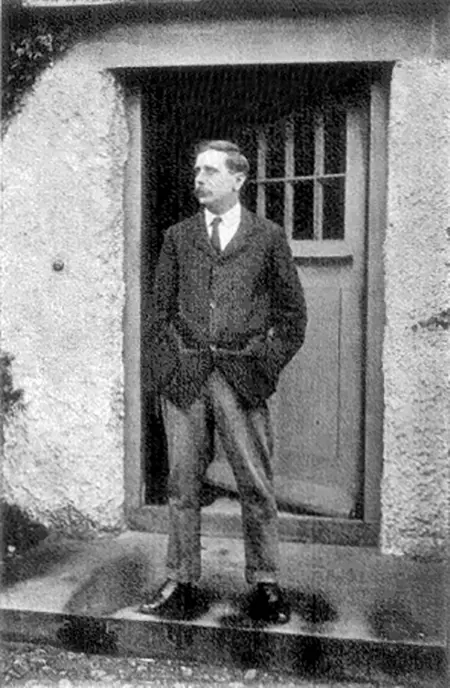

Герберт Джордж Уэллс
Герберт Джордж Уэллс - английский
писатель и публицист. Автор известных научно-фантастических романов
«Машина времени», «Человек-невидимка», «Война миров» и др.
Представитель критического реализма. Сторонник фабианского
социализма. Трижды посещал Россию,
где встречался с Лениным и Сталиным.

Фильмы по произведениям Герберта Уэллса
- 1984 год - «Человек-невидимка», режисёр Александр
Захаров
- 1996 год - «Остров доктора Моро», режиссёры Джон
Франкенхаймер и Ричард
Стенли
- 2001 год - «Фантастические миры Герберта Уэллса»,
режиссёр Роберт Янг
- 2002 год - «Машина времени», режиссёр Саймон Уэллс,
правнук Герберта Уэллса
- 2005 год - «Война миров», режиссёр Стивен Спилберг
- 2005 год - «Война миров», режиссёр Тимоти Хайнс
- 2010 год - «Первые люди на Луне», режиссёр Марк
Гейтисс